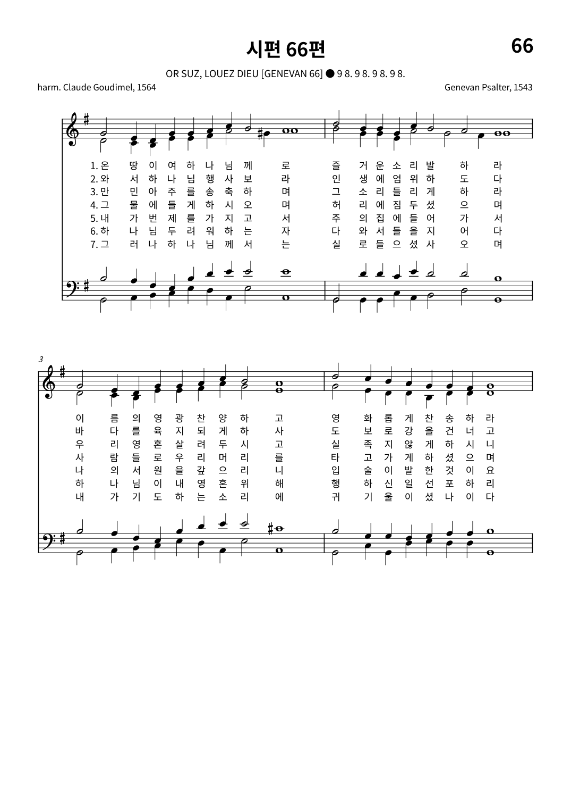
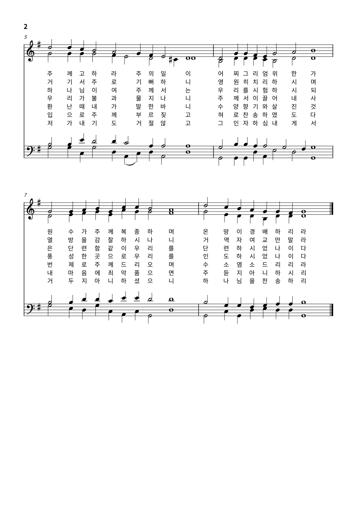

시편 66편
OR SUZ, LOUEZ DIEU [GENEVAN 66] · 9 8. 9 8. 9 8. 9 8.
곡조: Genevan Psalter, 1543 · 화성: Claude Goudimel, 1564 · 가사: 개역한글판 시편 66편 편역(AI 초벌 편역판 · 신학 감수 전) · 7절
악보 PDF MusicXML(출력용) MusicXML(반주용, 전주·반복 포함) 개역한글 시편 66편 읽기
악보


가사
1절 (시편 1~4)
온 땅이여 하나님께로
즐거운 소리 발하라
이름의 영광 찬양하고
영화롭게 찬송하라
주께 고하라 주의 일이
어찌 그리 엄위한가
원수가 주께 복종하며
온 땅이 경배하리라
온 땅이여 하나님께로
즐거운 소리 발하라
이름의 영광 찬양하고
영화롭게 찬송하라
주께 고하라 주의 일이
어찌 그리 엄위한가
원수가 주께 복종하며
온 땅이 경배하리라
2절 (시편 5~7)
와서 하나님 행사 보라
인생에 엄위하도다
바다를 육지 되게 하사
도보로 강을 건너고
거기서 주로 기뻐하니
영원히 치리하시며
열방을 감찰하시나니
거역자여 교만 말라
와서 하나님 행사 보라
인생에 엄위하도다
바다를 육지 되게 하사
도보로 강을 건너고
거기서 주로 기뻐하니
영원히 치리하시며
열방을 감찰하시나니
거역자여 교만 말라
3절 (시편 8~10)
만민아 주를 송축하며
그 소리 들리게 하라
우리 영혼 살려 두시고
실족지 않게 하시니
하나님이여 주께서는
우리를 시험하시되
은 단련함 같이 우리를
단련하시었나이다
만민아 주를 송축하며
그 소리 들리게 하라
우리 영혼 살려 두시고
실족지 않게 하시니
하나님이여 주께서는
우리를 시험하시되
은 단련함 같이 우리를
단련하시었나이다
4절 (시편 11~12)
그물에 들게 하시오며
허리에 짐 두셨으며
사람들로 우리 머리를
타고 가게 하셨으며
우리가 불과 물 지나니
주께서 이끌어내사
풍성한 곳으로 우리를
인도하시었나이다
그물에 들게 하시오며
허리에 짐 두셨으며
사람들로 우리 머리를
타고 가게 하셨으며
우리가 불과 물 지나니
주께서 이끌어내사
풍성한 곳으로 우리를
인도하시었나이다
5절 (시편 13~15)
내가 번제를 가지고서
주의 집에 들어가서
나의 서원을 갚으리니
입술이 발한 것이요
환난 때 내가 말한 바니
수양 향기와 살진 것
번제로 주께 드리오며
수소 염소 드리리라
내가 번제를 가지고서
주의 집에 들어가서
나의 서원을 갚으리니
입술이 발한 것이요
환난 때 내가 말한 바니
수양 향기와 살진 것
번제로 주께 드리오며
수소 염소 드리리라
6절 (시편 16~18)
하나님 두려워하는 자
다 와서 들을지어다
하나님이 내 영혼 위해
행하신 일 선포하리
입으로 주께 부르짖고
혀로 찬송하였도다
내 마음에 죄악 품으면
주 듣지 아니하시리
하나님 두려워하는 자
다 와서 들을지어다
하나님이 내 영혼 위해
행하신 일 선포하리
입으로 주께 부르짖고
혀로 찬송하였도다
내 마음에 죄악 품으면
주 듣지 아니하시리
7절 (시편 19~20)
그러나 하나님께서는
실로 들으셨사오며
내가 기도하는 소리에
귀 기울이셨나이다
저가 내 기도 거절 않고
그 인자하심 내게서
거두지 아니하셨으니
하나님을 찬송하리
그러나 하나님께서는
실로 들으셨사오며
내가 기도하는 소리에
귀 기울이셨나이다
저가 내 기도 거절 않고
그 인자하심 내게서
거두지 아니하셨으니
하나님을 찬송하리